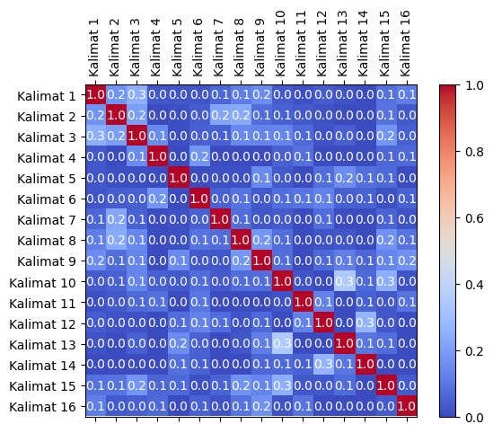
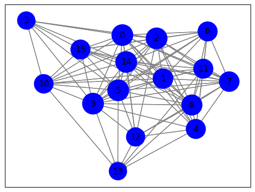

Crawling Berita#
import requests
from bs4 import BeautifulSoup
import nltk
from sklearn.metrics.pairwise import cosine_similarity
from sklearn.feature_extraction.text import TfidfVectorizer
import pandas as pd
import numpy as np
import matplotlib.pyplot as plt
import networkx as nx
# Input URL Berita
url = "https://www.antaranews.com/berita/3798024/anies-muhaimin-ajak-warga-jember-doakan-rakyat-palestina"
response = requests.get(url)
html = response.text
# Parsing halaman web menggunakan BeautifulSoup
soup = BeautifulSoup(html, 'html.parser')
# Ekstraksi teks dari elemen-elemen yang berisi berita
article = soup.find('div', class_="post-content clearfix")
if article:
article_text = article.get_text()
# Tokenisasi teks menjadi kalimat menggunakan nltk
nltk.download('punkt')
sentences = nltk.sent_tokenize(article_text)
# Cetak kalimat-kalimat
for sentence in sentences:
print(sentence)
else:
print("Elemen berita tidak ditemukan.")
[nltk_data] Downloading package punkt to /root/nltk_data...
[nltk_data] Unzipping tokenizers/punkt.zip.
Jember, Jawa Timur (ANTARA) - Pasangan bakal calon presiden (capres) dan calon wakil presiden (cawapres) , Anies Baswedan dan Muhaimin Iskandar mengajak warga Kabupaten Jember, Jawa Timur mendoakan rakyat Palestina agar segera merdeka dan menjadi bangsa yang mandiri.
"Mari berdoa untuk saudara kita di Palestina, memohon agar rakyat Palestina selamat dari gempuran Israel dan segera merdeka," kata Muhaimin di sela-sela kegiatan safari politiknya di Jember, Minggu.
Ia mengajak ribuan warga yang hadir dalam kegiatan jalan sehat bersarung di Jember untuk membaca surat Al-Fatihah bersama-sama dengan harapan bangsa Palestina segera merdeka dan menjadi bangsa yang mandiri.
"Bangsa Indonesia diharapkan memberikan jalan keluar.
Semua ikhtiar sudah dilakukan dan diplomasi oleh Menteri Luar Negeri Bu Retno sudah dijalankan, namun PBB tumpul tak berdaya," tuturnya.
Menurutnya Indonesia harus memberikan pertolongan kepada rakyat Palestina karena Indonesia sebagai negara dengan penduduk muslim terbesar, sehingga bisa menolong negara lain.
"Kalau AMIN menang maka kami tolong saudara kita di Palestina, Rohingya, dan saudara muslim lainnya di dunia," ucap Wakil Ketua DPR RI tersebut.
Muhaimin juga mengenakan pita bendera Palestina yang diikat di lengannya sebagai aksi solidaritas mendukung perjuangan rakyat Palestina untuk merdeka dan mengecam tindakan brutal Israel.
Sementara itu Anies Baswedan juga memuji Menteri Luar Negeri Retno Marsudi dalam membela perjuangan rakyat Palestina dan mengutuk kekejaman Israel yang menyebabkan banyak warga sipil menjadi korban.
"Saya ingin sampaikan apresiasi kepada Ibu Menlu yang di dalam Sidang PBB menyampaikan sikap yang tegas, yang jelas, atas posisi Indonesia," katanya.
Ia mengatakan sejak awal kemerdekaan Republik Indonesia menggarisbawahi sesuatu tentang kemerdekaan adalah hak segala bangsa, sehingga penjajahan harus dihapuskan dari muka bumi.
"Kami semua hapal itu dan harus dipegang, sehingga harus diperjuangkan.
Saya hormat kepada sikap yang dilakukan Kementerian Luar Negeri melalui Ibu Menlu.
Sikap itu harus terus dijaga," tuturnya.
Dalam sidang darurat Majelis Umum Persatuan Bangsa-Bangsa, di New York, Amerika Serikat, Kamis (26/10), Menlu Retno mengecam Dewan Keamanan PBB yang gagal bertindak dan gagal menghasilkan tindakan yang tegas dalam konflik Palestina dan Israel.
Baca juga: Anies Baswedan ajak pendukungnya doakan kemerdekaan Palestina
Baca juga: Anies Baswedan ajak masyarakat Indonesia doakan bangsa Palestina
Pewarta: Zumrotun SolichahEditor: Guido Merung COPYRIGHT © ANTARA 2023
# Inisialisasi penghitung TF-IDF
tfidf_vectorizer = TfidfVectorizer()
# Hitung TF-IDF
tfidf_matrix = tfidf_vectorizer.fit_transform(sentences)
# Daftar kata kunci
feature_names = tfidf_vectorizer.get_feature_names_out()
# Konversi matriks TF-IDF
tfidf_values = tfidf_matrix.toarray()
# Cetak TF-IDF untuk setiap kata dalam setiap kalimat
for i, sentence in enumerate(sentences):
print(f"Kalimat {i + 1}: {sentence}")
for j, word in enumerate(feature_names):
tfidf_value = tfidf_values[i][j]
if tfidf_value > 0:
print(f"{word}: {tfidf_value:.4f}")
print()
Kalimat 1:
Jember, Jawa Timur (ANTARA) - Pasangan bakal calon presiden (capres) dan calon wakil presiden (cawapres) , Anies Baswedan dan Muhaimin Iskandar mengajak warga Kabupaten Jember, Jawa Timur mendoakan rakyat Palestina agar segera merdeka dan menjadi bangsa yang mandiri.
agar: 0.1435
anies: 0.1284
antara: 0.1435
bakal: 0.1648
bangsa: 0.0990
baswedan: 0.1284
calon: 0.3295
capres: 0.1648
cawapres: 0.1648
dan: 0.2409
iskandar: 0.1648
jawa: 0.3295
jember: 0.2568
kabupaten: 0.1648
mandiri: 0.1435
mendoakan: 0.1648
mengajak: 0.1435
menjadi: 0.1284
merdeka: 0.1167
muhaimin: 0.1284
palestina: 0.0803
pasangan: 0.1648
presiden: 0.3295
rakyat: 0.1071
segera: 0.1284
timur: 0.3295
wakil: 0.1435
warga: 0.1284
yang: 0.0920
Kalimat 2: "Mari berdoa untuk saudara kita di Palestina, memohon agar rakyat Palestina selamat dari gempuran Israel dan segera merdeka," kata Muhaimin di sela-sela kegiatan safari politiknya di Jember, Minggu.
agar: 0.1739
berdoa: 0.1997
dan: 0.0973
dari: 0.1739
di: 0.3600
gempuran: 0.1997
israel: 0.1414
jember: 0.1556
kata: 0.1997
kegiatan: 0.1739
kita: 0.1739
mari: 0.1997
memohon: 0.1997
merdeka: 0.1414
minggu: 0.1997
muhaimin: 0.1556
palestina: 0.1946
politiknya: 0.1997
rakyat: 0.1298
safari: 0.1997
saudara: 0.1739
segera: 0.1556
sela: 0.3993
selamat: 0.1997
untuk: 0.1556
Kalimat 3: Ia mengajak ribuan warga yang hadir dalam kegiatan jalan sehat bersarung di Jember untuk membaca surat Al-Fatihah bersama-sama dengan harapan bangsa Palestina segera merdeka dan menjadi bangsa yang mandiri.
al: 0.2080
bangsa: 0.2500
bersama: 0.2080
bersarung: 0.2080
dalam: 0.1473
dan: 0.1014
dengan: 0.1811
di: 0.1250
fatihah: 0.2080
hadir: 0.2080
harapan: 0.2080
ia: 0.1811
jalan: 0.1811
jember: 0.1621
kegiatan: 0.1811
mandiri: 0.1811
membaca: 0.2080
mengajak: 0.1811
menjadi: 0.1621
merdeka: 0.1473
palestina: 0.1014
ribuan: 0.2080
sama: 0.2080
segera: 0.1621
sehat: 0.2080
surat: 0.2080
untuk: 0.1621
warga: 0.1621
yang: 0.2323
Kalimat 4: "Bangsa Indonesia diharapkan memberikan jalan keluar.
bangsa: 0.2898
diharapkan: 0.4822
indonesia: 0.3135
jalan: 0.4199
keluar: 0.4822
memberikan: 0.4199
Kalimat 5: Semua ikhtiar sudah dilakukan dan diplomasi oleh Menteri Luar Negeri Bu Retno sudah dijalankan, namun PBB tumpul tak berdaya," tuturnya.
berdaya: 0.2312
bu: 0.2312
dan: 0.1127
dijalankan: 0.2312
dilakukan: 0.2014
diplomasi: 0.2312
ikhtiar: 0.2312
luar: 0.1802
menteri: 0.2014
namun: 0.2312
negeri: 0.1802
oleh: 0.2312
pbb: 0.1802
retno: 0.1802
semua: 0.2014
sudah: 0.4625
tak: 0.2312
tumpul: 0.2312
tuturnya: 0.2014
Kalimat 6: Menurutnya Indonesia harus memberikan pertolongan kepada rakyat Palestina karena Indonesia sebagai negara dengan penduduk muslim terbesar, sehingga bisa menolong negara lain.
bisa: 0.2288
dengan: 0.1993
harus: 0.1620
indonesia: 0.2975
karena: 0.2288
kepada: 0.1783
lain: 0.2288
memberikan: 0.1993
menolong: 0.2288
menurutnya: 0.2288
muslim: 0.1993
negara: 0.4576
palestina: 0.1115
penduduk: 0.2288
pertolongan: 0.2288
rakyat: 0.1488
sebagai: 0.1993
sehingga: 0.1783
terbesar: 0.2288
Kalimat 7: "Kalau AMIN menang maka kami tolong saudara kita di Palestina, Rohingya, dan saudara muslim lainnya di dunia," ucap Wakil Ketua DPR RI tersebut.
amin: 0.2183
dan: 0.1064
di: 0.2624
dpr: 0.2183
dunia: 0.2183
kalau: 0.2183
kami: 0.1901
ketua: 0.2183
kita: 0.1901
lainnya: 0.2183
maka: 0.2183
menang: 0.2183
muslim: 0.1901
palestina: 0.1064
ri: 0.2183
rohingya: 0.2183
saudara: 0.3802
tersebut: 0.2183
tolong: 0.2183
ucap: 0.2183
wakil: 0.1901
Kalimat 8: Muhaimin juga mengenakan pita bendera Palestina yang diikat di lengannya sebagai aksi solidaritas mendukung perjuangan rakyat Palestina untuk merdeka dan mengecam tindakan brutal Israel.
aksi: 0.2415
bendera: 0.2415
brutal: 0.2415
dan: 0.1177
di: 0.1452
diikat: 0.2415
israel: 0.1710
juga: 0.1882
lengannya: 0.2415
mendukung: 0.2415
mengecam: 0.2103
mengenakan: 0.2415
merdeka: 0.1710
muhaimin: 0.1882
palestina: 0.2355
perjuangan: 0.2103
pita: 0.2415
rakyat: 0.1570
sebagai: 0.2103
solidaritas: 0.2415
tindakan: 0.2103
untuk: 0.1882
yang: 0.1349
Kalimat 9: Sementara itu Anies Baswedan juga memuji Menteri Luar Negeri Retno Marsudi dalam membela perjuangan rakyat Palestina dan mengutuk kekejaman Israel yang menyebabkan banyak warga sipil menjadi korban.
anies: 0.1779
banyak: 0.2282
baswedan: 0.1779
dalam: 0.1616
dan: 0.1113
israel: 0.1616
itu: 0.1779
juga: 0.1779
kekejaman: 0.2282
korban: 0.2282
luar: 0.1779
marsudi: 0.2282
membela: 0.2282
memuji: 0.2282
mengutuk: 0.2282
menjadi: 0.1779
menteri: 0.1988
menyebabkan: 0.2282
negeri: 0.1779
palestina: 0.1113
perjuangan: 0.1988
rakyat: 0.1484
retno: 0.1779
sementara: 0.2282
sipil: 0.2282
warga: 0.1779
yang: 0.1275
Kalimat 10: "Saya ingin sampaikan apresiasi kepada Ibu Menlu yang di dalam Sidang PBB menyampaikan sikap yang tegas, yang jelas, atas posisi Indonesia," katanya.
apresiasi: 0.2387
atas: 0.2387
dalam: 0.1690
di: 0.1434
ibu: 0.2078
indonesia: 0.1552
ingin: 0.2387
jelas: 0.2387
katanya: 0.2387
kepada: 0.1860
menlu: 0.1860
menyampaikan: 0.2387
pbb: 0.1860
posisi: 0.2387
sampaikan: 0.2387
saya: 0.2078
sidang: 0.2078
sikap: 0.1860
tegas: 0.2078
yang: 0.3999
Kalimat 11: Ia mengatakan sejak awal kemerdekaan Republik Indonesia menggarisbawahi sesuatu tentang kemerdekaan adalah hak segala bangsa, sehingga penjajahan harus dihapuskan dari muka bumi.
adalah: 0.2212
awal: 0.2212
bangsa: 0.1329
bumi: 0.2212
dari: 0.1926
dihapuskan: 0.2212
hak: 0.2212
harus: 0.1566
ia: 0.1926
indonesia: 0.1438
kemerdekaan: 0.3852
mengatakan: 0.2212
menggarisbawahi: 0.2212
muka: 0.2212
penjajahan: 0.2212
republik: 0.2212
segala: 0.2212
sehingga: 0.1723
sejak: 0.2212
sesuatu: 0.2212
tentang: 0.2212
Kalimat 12: "Kami semua hapal itu dan harus dipegang, sehingga harus diperjuangkan.
dan: 0.1726
dipegang: 0.3541
diperjuangkan: 0.3541
hapal: 0.3541
harus: 0.5016
itu: 0.2759
kami: 0.3084
sehingga: 0.2759
semua: 0.3084
Kalimat 13: Saya hormat kepada sikap yang dilakukan Kementerian Luar Negeri melalui Ibu Menlu.
dilakukan: 0.2966
hormat: 0.3405
ibu: 0.2966
kementerian: 0.3405
kepada: 0.2654
luar: 0.2654
melalui: 0.3405
menlu: 0.2654
negeri: 0.2654
saya: 0.2966
sikap: 0.2654
yang: 0.1902
Kalimat 14: Sikap itu harus terus dijaga," tuturnya.
dijaga: 0.4727
harus: 0.3348
itu: 0.3684
sikap: 0.3684
terus: 0.4727
tuturnya: 0.4117
Kalimat 15: Dalam sidang darurat Majelis Umum Persatuan Bangsa-Bangsa, di New York, Amerika Serikat, Kamis (26/10), Menlu Retno mengecam Dewan Keamanan PBB yang gagal bertindak dan gagal menghasilkan tindakan yang tegas dalam konflik Palestina dan Israel.
10: 0.1779
26: 0.1779
amerika: 0.1779
bangsa: 0.2138
bertindak: 0.1779
dalam: 0.2519
dan: 0.1734
darurat: 0.1779
dewan: 0.1779
di: 0.1069
gagal: 0.3558
israel: 0.1260
kamis: 0.1779
keamanan: 0.1779
konflik: 0.1779
majelis: 0.1779
mengecam: 0.1549
menghasilkan: 0.1779
menlu: 0.1386
new: 0.1779
palestina: 0.0867
pbb: 0.1386
persatuan: 0.1779
retno: 0.1386
serikat: 0.1779
sidang: 0.1549
tegas: 0.1549
tindakan: 0.1549
umum: 0.1779
yang: 0.1987
york: 0.1779
Kalimat 16: Baca juga: Anies Baswedan ajak pendukungnya doakan kemerdekaan Palestina
Baca juga: Anies Baswedan ajak masyarakat Indonesia doakan bangsa Palestina
Pewarta: Zumrotun SolichahEditor: Guido Merung COPYRIGHT © ANTARA 2023
2023: 0.1781
ajak: 0.3561
anies: 0.2775
antara: 0.1551
baca: 0.3561
bangsa: 0.1070
baswedan: 0.2775
copyright: 0.1781
doakan: 0.3561
guido: 0.1781
indonesia: 0.1158
juga: 0.2775
kemerdekaan: 0.1551
masyarakat: 0.1781
merung: 0.1781
palestina: 0.1736
pendukungnya: 0.1781
pewarta: 0.1781
solichaheditor: 0.1781
zumrotun: 0.1781
# Indeks kalimat yang akan dibandingkan
sentence1_index = 0
sentence2_index = 1
# Vektor TF-IDF untuk kedua kalimat
tfidf_vector1 = tfidf_matrix[sentence1_index]
tfidf_vector2 = tfidf_matrix[sentence2_index]
# menghitung cosine similarity antara kedua vektor
similarity = cosine_similarity(tfidf_vector1, tfidf_vector2)
# Cetak hasil cosine similarity
print(f"Cosine Similarity antara Kalimat {sentence1_index + 1} dan Kalimat {sentence2_index + 1}: {similarity[0][0]:.4f}")
Cosine Similarity antara Kalimat 1 dan Kalimat 2: 0.1743
# Matriks TF-IDF telah dihitung sebelumnya (tfidf_matrix)
# Hitung cosine similarity antara semua pasangan kalimat
similarity_matrix = cosine_similarity(tfidf_matrix, tfidf_matrix)
# Cetak hasil similarity_matrix
num_sentences = len(sentences) # Jumlah kalimat
for i in range(num_sentences):
for j in range(i+1, num_sentences):
similarity = similarity_matrix[i][j]
print(f"Cosine Similarity antara Kalimat {i + 1} dan Kalimat {j + 1}: {similarity:.4f}")
Cosine Similarity antara Kalimat 1 dan Kalimat 2: 0.1743
Cosine Similarity antara Kalimat 1 dan Kalimat 3: 0.2519
Cosine Similarity antara Kalimat 1 dan Kalimat 4: 0.0287
Cosine Similarity antara Kalimat 1 dan Kalimat 5: 0.0272
Cosine Similarity antara Kalimat 1 dan Kalimat 6: 0.0249
Cosine Similarity antara Kalimat 1 dan Kalimat 7: 0.0615
Cosine Similarity antara Kalimat 1 dan Kalimat 8: 0.1206
Cosine Similarity antara Kalimat 1 dan Kalimat 9: 0.1547
Cosine Similarity antara Kalimat 1 dan Kalimat 10: 0.0368
Cosine Similarity antara Kalimat 1 dan Kalimat 11: 0.0132
Cosine Similarity antara Kalimat 1 dan Kalimat 12: 0.0416
Cosine Similarity antara Kalimat 1 dan Kalimat 13: 0.0175
Cosine Similarity antara Kalimat 1 dan Kalimat 14: 0.0000
Cosine Similarity antara Kalimat 1 dan Kalimat 15: 0.0882
Cosine Similarity antara Kalimat 1 dan Kalimat 16: 0.1181
Cosine Similarity antara Kalimat 2 dan Kalimat 3: 0.2026
Cosine Similarity antara Kalimat 2 dan Kalimat 4: 0.0000
Cosine Similarity antara Kalimat 2 dan Kalimat 5: 0.0110
Cosine Similarity antara Kalimat 2 dan Kalimat 6: 0.0410
Cosine Similarity antara Kalimat 2 dan Kalimat 7: 0.2247
Cosine Similarity antara Kalimat 2 dan Kalimat 8: 0.2369
Cosine Similarity antara Kalimat 2 dan Kalimat 9: 0.0746
Cosine Similarity antara Kalimat 2 dan Kalimat 10: 0.0516
Cosine Similarity antara Kalimat 2 dan Kalimat 11: 0.0335
Cosine Similarity antara Kalimat 2 dan Kalimat 12: 0.0168
Cosine Similarity antara Kalimat 2 dan Kalimat 13: 0.0000
Cosine Similarity antara Kalimat 2 dan Kalimat 14: 0.0000
Cosine Similarity antara Kalimat 2 dan Kalimat 15: 0.0901
Cosine Similarity antara Kalimat 2 dan Kalimat 16: 0.0338
Cosine Similarity antara Kalimat 3 dan Kalimat 4: 0.1485
Cosine Similarity antara Kalimat 3 dan Kalimat 5: 0.0114
Cosine Similarity antara Kalimat 3 dan Kalimat 6: 0.0474
Cosine Similarity antara Kalimat 3 dan Kalimat 7: 0.0544
Cosine Similarity antara Kalimat 3 dan Kalimat 8: 0.1410
Cosine Similarity antara Kalimat 3 dan Kalimat 9: 0.1336
Cosine Similarity antara Kalimat 3 dan Kalimat 10: 0.1357
Cosine Similarity antara Kalimat 3 dan Kalimat 11: 0.0681
Cosine Similarity antara Kalimat 3 dan Kalimat 12: 0.0175
Cosine Similarity antara Kalimat 3 dan Kalimat 13: 0.0442
Cosine Similarity antara Kalimat 3 dan Kalimat 14: 0.0000
Cosine Similarity antara Kalimat 3 dan Kalimat 15: 0.1765
Cosine Similarity antara Kalimat 3 dan Kalimat 16: 0.0444
Cosine Similarity antara Kalimat 4 dan Kalimat 5: 0.0000
Cosine Similarity antara Kalimat 4 dan Kalimat 6: 0.1769
Cosine Similarity antara Kalimat 4 dan Kalimat 7: 0.0000
Cosine Similarity antara Kalimat 4 dan Kalimat 8: 0.0000
Cosine Similarity antara Kalimat 4 dan Kalimat 9: 0.0000
Cosine Similarity antara Kalimat 4 dan Kalimat 10: 0.0486
Cosine Similarity antara Kalimat 4 dan Kalimat 11: 0.0836
Cosine Similarity antara Kalimat 4 dan Kalimat 12: 0.0000
Cosine Similarity antara Kalimat 4 dan Kalimat 13: 0.0000
Cosine Similarity antara Kalimat 4 dan Kalimat 14: 0.0000
Cosine Similarity antara Kalimat 4 dan Kalimat 15: 0.0620
Cosine Similarity antara Kalimat 4 dan Kalimat 16: 0.0673
Cosine Similarity antara Kalimat 5 dan Kalimat 6: 0.0000
Cosine Similarity antara Kalimat 5 dan Kalimat 7: 0.0120
Cosine Similarity antara Kalimat 5 dan Kalimat 8: 0.0133
Cosine Similarity antara Kalimat 5 dan Kalimat 9: 0.1487
Cosine Similarity antara Kalimat 5 dan Kalimat 10: 0.0335
Cosine Similarity antara Kalimat 5 dan Kalimat 11: 0.0000
Cosine Similarity antara Kalimat 5 dan Kalimat 12: 0.0816
Cosine Similarity antara Kalimat 5 dan Kalimat 13: 0.1554
Cosine Similarity antara Kalimat 5 dan Kalimat 14: 0.0829
Cosine Similarity antara Kalimat 5 dan Kalimat 15: 0.0695
Cosine Similarity antara Kalimat 5 dan Kalimat 16: 0.0000
Cosine Similarity antara Kalimat 6 dan Kalimat 7: 0.0497
Cosine Similarity antara Kalimat 6 dan Kalimat 8: 0.0915
Cosine Similarity antara Kalimat 6 dan Kalimat 9: 0.0345
Cosine Similarity antara Kalimat 6 dan Kalimat 10: 0.0793
Cosine Similarity antara Kalimat 6 dan Kalimat 11: 0.0989
Cosine Similarity antara Kalimat 6 dan Kalimat 12: 0.1305
Cosine Similarity antara Kalimat 6 dan Kalimat 13: 0.0473
Cosine Similarity antara Kalimat 6 dan Kalimat 14: 0.0543
Cosine Similarity antara Kalimat 6 dan Kalimat 15: 0.0097
Cosine Similarity antara Kalimat 6 dan Kalimat 16: 0.0538
Cosine Similarity antara Kalimat 7 dan Kalimat 8: 0.0757
Cosine Similarity antara Kalimat 7 dan Kalimat 9: 0.0237
Cosine Similarity antara Kalimat 7 dan Kalimat 10: 0.0376
Cosine Similarity antara Kalimat 7 dan Kalimat 11: 0.0000
Cosine Similarity antara Kalimat 7 dan Kalimat 12: 0.0770
Cosine Similarity antara Kalimat 7 dan Kalimat 13: 0.0000
Cosine Similarity antara Kalimat 7 dan Kalimat 14: 0.0000
Cosine Similarity antara Kalimat 7 dan Kalimat 15: 0.0557
Cosine Similarity antara Kalimat 7 dan Kalimat 16: 0.0185
Cosine Similarity antara Kalimat 8 dan Kalimat 9: 0.1827
Cosine Similarity antara Kalimat 8 dan Kalimat 10: 0.0748
Cosine Similarity antara Kalimat 8 dan Kalimat 11: 0.0000
Cosine Similarity antara Kalimat 8 dan Kalimat 12: 0.0203
Cosine Similarity antara Kalimat 8 dan Kalimat 13: 0.0257
Cosine Similarity antara Kalimat 8 dan Kalimat 14: 0.0000
Cosine Similarity antara Kalimat 8 dan Kalimat 15: 0.1699
Cosine Similarity antara Kalimat 8 dan Kalimat 16: 0.0931
Cosine Similarity antara Kalimat 9 dan Kalimat 10: 0.0783
Cosine Similarity antara Kalimat 9 dan Kalimat 11: 0.0000
Cosine Similarity antara Kalimat 9 dan Kalimat 12: 0.0683
Cosine Similarity antara Kalimat 9 dan Kalimat 13: 0.1186
Cosine Similarity antara Kalimat 9 dan Kalimat 14: 0.0655
Cosine Similarity antara Kalimat 9 dan Kalimat 15: 0.1400
Cosine Similarity antara Kalimat 9 dan Kalimat 16: 0.1674
Cosine Similarity antara Kalimat 10 dan Kalimat 11: 0.0223
Cosine Similarity antara Kalimat 10 dan Kalimat 12: 0.0000
Cosine Similarity antara Kalimat 10 dan Kalimat 13: 0.3474
Cosine Similarity antara Kalimat 10 dan Kalimat 14: 0.0685
Cosine Similarity antara Kalimat 10 dan Kalimat 15: 0.2533
Cosine Similarity antara Kalimat 10 dan Kalimat 16: 0.0180
Cosine Similarity antara Kalimat 11 dan Kalimat 12: 0.1261
Cosine Similarity antara Kalimat 11 dan Kalimat 13: 0.0000
Cosine Similarity antara Kalimat 11 dan Kalimat 14: 0.0524
Cosine Similarity antara Kalimat 11 dan Kalimat 15: 0.0284
Cosine Similarity antara Kalimat 11 dan Kalimat 16: 0.0906
Cosine Similarity antara Kalimat 12 dan Kalimat 13: 0.0000
Cosine Similarity antara Kalimat 12 dan Kalimat 14: 0.2696
Cosine Similarity antara Kalimat 12 dan Kalimat 15: 0.0299
Cosine Similarity antara Kalimat 12 dan Kalimat 16: 0.0000
Cosine Similarity antara Kalimat 13 dan Kalimat 14: 0.0978
Cosine Similarity antara Kalimat 13 dan Kalimat 15: 0.0746
Cosine Similarity antara Kalimat 13 dan Kalimat 16: 0.0000
Cosine Similarity antara Kalimat 14 dan Kalimat 15: 0.0000
Cosine Similarity antara Kalimat 14 dan Kalimat 16: 0.0000
Cosine Similarity antara Kalimat 15 dan Kalimat 16: 0.0379
# Matriks TF-IDF telah dihitung sebelumnya (tfidf_matrix)
# Hitung cosine similarity antara semua pasangan kalimat
similarity_matrix = cosine_similarity(tfidf_matrix, tfidf_matrix)
# Nama kolom dan indeks untuk DataFrame
sentence_indices = [f"Kalimat {i + 1}" for i in range(len(sentences))]
# Buat DataFrame dari hasil cosine similarity
df = pd.DataFrame(similarity_matrix, columns=sentence_indices, index=sentence_indices)
# Cetak DataFrame
df
| Kalimat 1 | Kalimat 2 | Kalimat 3 | Kalimat 4 | Kalimat 5 | Kalimat 6 | Kalimat 7 | Kalimat 8 | Kalimat 9 | Kalimat 10 | Kalimat 11 | Kalimat 12 | Kalimat 13 | Kalimat 14 | Kalimat 15 | Kalimat 16 | |
|---|---|---|---|---|---|---|---|---|---|---|---|---|---|---|---|---|
| Kalimat 1 | 1.000000 | 0.174334 | 0.251905 | 0.028700 | 0.027159 | 0.024892 | 0.061458 | 0.120632 | 0.154712 | 0.036799 | 0.013164 | 0.041588 | 0.017502 | 0.000000 | 0.088204 | 0.118053 |
| Kalimat 2 | 0.174334 | 1.000000 | 0.202564 | 0.000000 | 0.010970 | 0.041019 | 0.224688 | 0.236869 | 0.074602 | 0.051642 | 0.033490 | 0.016799 | 0.000000 | 0.000000 | 0.090054 | 0.033790 |
| Kalimat 3 | 0.251905 | 0.202564 | 1.000000 | 0.148516 | 0.011428 | 0.047398 | 0.054373 | 0.140987 | 0.133634 | 0.135729 | 0.068119 | 0.017499 | 0.044185 | 0.000000 | 0.176460 | 0.044356 |
| Kalimat 4 | 0.028700 | 0.000000 | 0.148516 | 1.000000 | 0.000000 | 0.176947 | 0.000000 | 0.000000 | 0.000000 | 0.048643 | 0.083603 | 0.000000 | 0.000000 | 0.000000 | 0.061970 | 0.067310 |
| Kalimat 5 | 0.027159 | 0.010970 | 0.011428 | 0.000000 | 1.000000 | 0.000000 | 0.011994 | 0.013271 | 0.148726 | 0.033514 | 0.000000 | 0.081561 | 0.155361 | 0.082912 | 0.069504 | 0.000000 |
| Kalimat 6 | 0.024892 | 0.041019 | 0.047398 | 0.176947 | 0.000000 | 1.000000 | 0.049747 | 0.091534 | 0.034483 | 0.079325 | 0.098890 | 0.130473 | 0.047315 | 0.054251 | 0.009671 | 0.053804 |
| Kalimat 7 | 0.061458 | 0.224688 | 0.054373 | 0.000000 | 0.011994 | 0.049747 | 1.000000 | 0.075672 | 0.023677 | 0.037640 | 0.000000 | 0.076988 | 0.000000 | 0.000000 | 0.055730 | 0.018471 |
| Kalimat 8 | 0.120632 | 0.236869 | 0.140987 | 0.000000 | 0.013271 | 0.091534 | 0.075672 | 1.000000 | 0.182729 | 0.074768 | 0.000000 | 0.020322 | 0.025656 | 0.000000 | 0.169870 | 0.093108 |
| Kalimat 9 | 0.154712 | 0.074602 | 0.133634 | 0.000000 | 0.148726 | 0.034483 | 0.023677 | 0.182729 | 1.000000 | 0.078300 | 0.000000 | 0.068284 | 0.118643 | 0.065524 | 0.140012 | 0.167396 |
| Kalimat 10 | 0.036799 | 0.051642 | 0.135729 | 0.048643 | 0.033514 | 0.079325 | 0.037640 | 0.074768 | 0.078300 | 1.000000 | 0.022311 | 0.000000 | 0.347397 | 0.068515 | 0.253332 | 0.017963 |
| Kalimat 11 | 0.013164 | 0.033490 | 0.068119 | 0.083603 | 0.000000 | 0.098890 | 0.000000 | 0.000000 | 0.000000 | 0.022311 | 1.000000 | 0.126116 | 0.000000 | 0.052440 | 0.028424 | 0.090611 |
| Kalimat 12 | 0.041588 | 0.016799 | 0.017499 | 0.000000 | 0.081561 | 0.130473 | 0.076988 | 0.020322 | 0.068284 | 0.000000 | 0.126116 | 1.000000 | 0.000000 | 0.269572 | 0.029933 | 0.000000 |
| Kalimat 13 | 0.017502 | 0.000000 | 0.044185 | 0.000000 | 0.155361 | 0.047315 | 0.000000 | 0.025656 | 0.118643 | 0.347397 | 0.000000 | 0.000000 | 1.000000 | 0.097758 | 0.074573 | 0.000000 |
| Kalimat 14 | 0.000000 | 0.000000 | 0.000000 | 0.000000 | 0.082912 | 0.054251 | 0.000000 | 0.000000 | 0.065524 | 0.068515 | 0.052440 | 0.269572 | 0.097758 | 1.000000 | 0.000000 | 0.000000 |
| Kalimat 15 | 0.088204 | 0.090054 | 0.176460 | 0.061970 | 0.069504 | 0.009671 | 0.055730 | 0.169870 | 0.140012 | 0.253332 | 0.028424 | 0.029933 | 0.074573 | 0.000000 | 1.000000 | 0.037936 |
| Kalimat 16 | 0.118053 | 0.033790 | 0.044356 | 0.067310 | 0.000000 | 0.053804 | 0.018471 | 0.093108 | 0.167396 | 0.017963 | 0.090611 | 0.000000 | 0.000000 | 0.000000 | 0.037936 | 1.000000 |
# Matriks TF-IDF telah dihitung sebelumnya (tfidf_matrix)
# Menghitung cosine similarity antara semua pasangan kalimat
similarity_matrix = cosine_similarity(tfidf_matrix, tfidf_matrix)
# Nama kolom dan indeks untuk DataFrame
sentence_indices = [f"Kalimat {i + 1}" for i in range(len(sentences))]
# Membuat DataFrame dari hasil cosine similarity
df = pd.DataFrame(similarity_matrix, columns=sentence_indices, index=sentence_indices)
# Membuat grafik matriks
fig, ax = plt.subplots()
cax = ax.matshow(df, cmap='coolwarm')
fig.colorbar(cax)
# Memberi label pada sumbu X dan Y
ax.set_xticks(np.arange(len(df.columns)))
ax.set_yticks(np.arange(len(df.index)))
ax.set_xticklabels(df.columns, rotation=90)
ax.set_yticklabels(df.index)
# Menampilkan nilai similarity pada matriks
for i in range(len(df.index)):
for j in range(len(df.columns)):
text = ax.text(j, i, f'{df.iat[i, j]:.1f}', ha='center', va='center', color='w')
plt.show()

# grafik dari matriks similarity
G = nx.Graph()
# menambahkan simpul (node) ke grafik yang mewakili setiap kalimat
for sentence in sentences:
G.add_node(sentence)
# Tambahkan tepi (edge) antara kalimat berdasarkan similarity
for i in range(len(sentences)):
for j in range(i + 1, len(sentences)):
similarity = df.iloc[i, j] # Mengambil similarity dari DataFrame
if similarity > 0:
G.add_edge(sentences[i], sentences[j], weight=similarity)
# Hitung closeness centrality untuk setiap simpul
closeness_centrality = nx.closeness_centrality(G, distance='weight')
# Cetak closeness centrality
for sentence, centrality in closeness_centrality.items():
print(f"Closeness Centrality of {sentence}: {centrality:.4f}")
Closeness Centrality of
Jember, Jawa Timur (ANTARA) - Pasangan bakal calon presiden (capres) dan calon wakil presiden (cawapres) , Anies Baswedan dan Muhaimin Iskandar mengajak warga Kabupaten Jember, Jawa Timur mendoakan rakyat Palestina agar segera merdeka dan menjadi bangsa yang mandiri.: 26.8935
Closeness Centrality of "Mari berdoa untuk saudara kita di Palestina, memohon agar rakyat Palestina selamat dari gempuran Israel dan segera merdeka," kata Muhaimin di sela-sela kegiatan safari politiknya di Jember, Minggu.: 25.6711
Closeness Centrality of Ia mengajak ribuan warga yang hadir dalam kegiatan jalan sehat bersarung di Jember untuk membaca surat Al-Fatihah bersama-sama dengan harapan bangsa Palestina segera merdeka dan menjadi bangsa yang mandiri.: 24.0248
Closeness Centrality of "Bangsa Indonesia diharapkan memberikan jalan keluar.: 16.1777
Closeness Centrality of Semua ikhtiar sudah dilakukan dan diplomasi oleh Menteri Luar Negeri Bu Retno sudah dijalankan, namun PBB tumpul tak berdaya," tuturnya.: 28.3045
Closeness Centrality of Menurutnya Indonesia harus memberikan pertolongan kepada rakyat Palestina karena Indonesia sebagai negara dengan penduduk muslim terbesar, sehingga bisa menolong negara lain.: 22.9010
Closeness Centrality of "Kalau AMIN menang maka kami tolong saudara kita di Palestina, Rohingya, dan saudara muslim lainnya di dunia," ucap Wakil Ketua DPR RI tersebut.: 24.7154
Closeness Centrality of Muhaimin juga mengenakan pita bendera Palestina yang diikat di lengannya sebagai aksi solidaritas mendukung perjuangan rakyat Palestina untuk merdeka dan mengecam tindakan brutal Israel.: 23.3488
Closeness Centrality of Sementara itu Anies Baswedan juga memuji Menteri Luar Negeri Retno Marsudi dalam membela perjuangan rakyat Palestina dan mengutuk kekejaman Israel yang menyebabkan banyak warga sipil menjadi korban.: 18.5995
Closeness Centrality of "Saya ingin sampaikan apresiasi kepada Ibu Menlu yang di dalam Sidang PBB menyampaikan sikap yang tegas, yang jelas, atas posisi Indonesia," katanya.: 21.9126
Closeness Centrality of Ia mengatakan sejak awal kemerdekaan Republik Indonesia menggarisbawahi sesuatu tentang kemerdekaan adalah hak segala bangsa, sehingga penjajahan harus dihapuskan dari muka bumi.: 24.1352
Closeness Centrality of "Kami semua hapal itu dan harus dipegang, sehingga harus diperjuangkan.: 22.4216
Closeness Centrality of Saya hormat kepada sikap yang dilakukan Kementerian Luar Negeri melalui Ibu Menlu.: 20.7050
Closeness Centrality of Sikap itu harus terus dijaga," tuturnya.: 12.7490
Closeness Centrality of Dalam sidang darurat Majelis Umum Persatuan Bangsa-Bangsa, di New York, Amerika Serikat, Kamis (26/10), Menlu Retno mengecam Dewan Keamanan PBB yang gagal bertindak dan gagal menghasilkan tindakan yang tegas dalam konflik Palestina dan Israel.: 22.3473
Closeness Centrality of Baca juga: Anies Baswedan ajak pendukungnya doakan kemerdekaan Palestina
Baca juga: Anies Baswedan ajak masyarakat Indonesia doakan bangsa Palestina
Pewarta: Zumrotun SolichahEditor: Guido Merung COPYRIGHT © ANTARA 2023: 22.0334
# Matriks TF-IDF telah dihitung sebelumnya (tfidf_matrix)
# Hitung cosine similarity antara semua pasangan kalimat
similarity_matrix = cosine_similarity(tfidf_matrix, tfidf_matrix)
# Buat grafik berarah (DiGraph) berdasarkan similarity_matrix
G = nx.DiGraph()
for i in range(len(similarity_matrix)):
G.add_node(i)
for i in range(len(similarity_matrix)):
for j in range(len(similarity_matrix)):
similarity = similarity_matrix[i][j]
if similarity > 0 and i != j:
G.add_edge(i, j)
# Hitung closeness centrality
closeness_centrality = nx.closeness_centrality(G)
# Visualisasi closeness centrality
pos = nx.spring_layout(G)
node_size = [v * 1000 for v in closeness_centrality.values()]
nx.draw_networkx_nodes(G, pos, node_size=node_size, node_color='b')
nx.draw_networkx_edges(G, pos, edge_color='gray', arrows=True)
nx.draw_networkx_labels(G, pos)
plt.show()
# Cetak closeness centrality
print("Closeness Centrality:")
sorted_closeness_centrality = dict(sorted(closeness_centrality.items(), key=lambda item: item[1], reverse=True))
for node, centrality in sorted_closeness_centrality.items():
print(f"Node {node}: {centrality:.4f}")

Closeness Centrality:
Node 0: 0.9375
Node 2: 0.9375
Node 5: 0.9375
Node 9: 0.9375
Node 14: 0.9375
Node 8: 0.8824
Node 1: 0.8333
Node 7: 0.8333
Node 4: 0.7895
Node 6: 0.7895
Node 11: 0.7895
Node 15: 0.7895
Node 10: 0.7500
Node 12: 0.7143
Node 3: 0.6522
Node 13: 0.6522
top_nodes = {} # Membuat dictionary untuk menyimpan tiga node teratas
# Mengambil tiga node teratas
count = 0
for node, centrality in sorted_closeness_centrality.items():
top_nodes[node] = centrality
count += 1
if count == 3:
break
for node, centrality in sorted_closeness_centrality.items():
node_index = int(node) # Mendapatkan indeks node dari nama node
sentence = sentences[node_index] # Mengambil kalimat yang sesuai dengan node
print(f"{node}: {centrality:.4f} - {sentence}")
0: 0.9375 -
Jember, Jawa Timur (ANTARA) - Pasangan bakal calon presiden (capres) dan calon wakil presiden (cawapres) , Anies Baswedan dan Muhaimin Iskandar mengajak warga Kabupaten Jember, Jawa Timur mendoakan rakyat Palestina agar segera merdeka dan menjadi bangsa yang mandiri.
2: 0.9375 - Ia mengajak ribuan warga yang hadir dalam kegiatan jalan sehat bersarung di Jember untuk membaca surat Al-Fatihah bersama-sama dengan harapan bangsa Palestina segera merdeka dan menjadi bangsa yang mandiri.
5: 0.9375 - Menurutnya Indonesia harus memberikan pertolongan kepada rakyat Palestina karena Indonesia sebagai negara dengan penduduk muslim terbesar, sehingga bisa menolong negara lain.
9: 0.9375 - "Saya ingin sampaikan apresiasi kepada Ibu Menlu yang di dalam Sidang PBB menyampaikan sikap yang tegas, yang jelas, atas posisi Indonesia," katanya.
14: 0.9375 - Dalam sidang darurat Majelis Umum Persatuan Bangsa-Bangsa, di New York, Amerika Serikat, Kamis (26/10), Menlu Retno mengecam Dewan Keamanan PBB yang gagal bertindak dan gagal menghasilkan tindakan yang tegas dalam konflik Palestina dan Israel.
8: 0.8824 - Sementara itu Anies Baswedan juga memuji Menteri Luar Negeri Retno Marsudi dalam membela perjuangan rakyat Palestina dan mengutuk kekejaman Israel yang menyebabkan banyak warga sipil menjadi korban.
1: 0.8333 - "Mari berdoa untuk saudara kita di Palestina, memohon agar rakyat Palestina selamat dari gempuran Israel dan segera merdeka," kata Muhaimin di sela-sela kegiatan safari politiknya di Jember, Minggu.
7: 0.8333 - Muhaimin juga mengenakan pita bendera Palestina yang diikat di lengannya sebagai aksi solidaritas mendukung perjuangan rakyat Palestina untuk merdeka dan mengecam tindakan brutal Israel.
4: 0.7895 - Semua ikhtiar sudah dilakukan dan diplomasi oleh Menteri Luar Negeri Bu Retno sudah dijalankan, namun PBB tumpul tak berdaya," tuturnya.
6: 0.7895 - "Kalau AMIN menang maka kami tolong saudara kita di Palestina, Rohingya, dan saudara muslim lainnya di dunia," ucap Wakil Ketua DPR RI tersebut.
11: 0.7895 - "Kami semua hapal itu dan harus dipegang, sehingga harus diperjuangkan.
15: 0.7895 - Baca juga: Anies Baswedan ajak pendukungnya doakan kemerdekaan Palestina
Baca juga: Anies Baswedan ajak masyarakat Indonesia doakan bangsa Palestina
Pewarta: Zumrotun SolichahEditor: Guido Merung COPYRIGHT © ANTARA 2023
10: 0.7500 - Ia mengatakan sejak awal kemerdekaan Republik Indonesia menggarisbawahi sesuatu tentang kemerdekaan adalah hak segala bangsa, sehingga penjajahan harus dihapuskan dari muka bumi.
12: 0.7143 - Saya hormat kepada sikap yang dilakukan Kementerian Luar Negeri melalui Ibu Menlu.
3: 0.6522 - "Bangsa Indonesia diharapkan memberikan jalan keluar.
13: 0.6522 - Sikap itu harus terus dijaga," tuturnya.